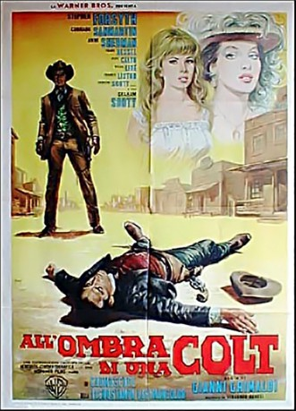

#6549 Pistoleros
Alternativ: In a Colt's Shadow (Englischer Titel)
 
 IMDB-Wertung: 6.1 / 10
IMDB-Wertung: 6.1 / 10  Metascore: 0
Metascore: 0 
Steve (Stephen Forsyth) und sein Kumpel Duke sind begnadete Pistolenschützen. Nach ihrem letzten Auftrag, bei dem Duke verletzt wird, entschließt sich Steve einen bürgerlichen Beruf anzunehmen und brennt mit Dukes Tochter Susan durch. Dieser schwört an seinem Krankenbett Rache. Währenddessen wollen sich Steve und Susan in dem Ort Providence niederlassen. Doch schon bald bekommt Steve Probleme mit den beiden reichsten Bürgern der Stadt. Als dann auch noch Dukes Frau Fabienne auftaucht, wird die Luft immer dicker...
Jahr: 1965
Dauer: 81 Minuten
FSK: 16
Land: Italien Studio: Koch MediaTonspuren:
Untertitel: Deutsch,
Auflösung: 1080p (1920x824) Größe: 6717 MB
Genre: Western
Regisseur: Giovanni Grimaldi
Drehbuch: Giovanni Grimaldi
Soundtrack:
Darsteller:
- Stephen Forsyth als Steve Blaine
 Conrado San Martín als Duke Buchanan
Conrado San Martín als Duke Buchanan- Helga Liné als Fabienne
 Aldo Sambrell als Ramirez
Aldo Sambrell als Ramirez- Xan das Bolas als Veterinarian
- Hugo Blanco als (uncredited
 Sancho Gracia als Saloon Gunslinger , uncredited
Sancho Gracia als Saloon Gunslinger , uncredited Rufino Inglés als Gambler , uncredited
Rufino Inglés als Gambler , uncredited Franco Ressel als Jackson
Franco Ressel als Jackson- Franco Lantieri als Burns
- José Calvo als Sheriff
- Anna Maria Polani als Susan
- Eugenio Galadini als Buck
- Javier de Rivera als Williams
- José Marco als Sbirro
- Andrea Scotti als Oliver
- Rafael Albaicín als Auctioneer
- Glauco Onorato als Title Sequence Narrator
- Richard McNamara als Title Sequence Narrator
- Gino Cassani als Jim , uncredited
- Leoncito Cayetano als (uncredited
 Álvaro de Luna als (uncredited
Álvaro de Luna als (uncredited- Hilario Flores als Man at Mexican Village Bank , uncredited
 Tito García als Bartender , uncredited
Tito García als Bartender , uncredited- Rafael Ibáñez als (uncredited
- Walter Maestosi als Mexican Bandit , uncredited
- Guillermo Méndez als (uncredited
- Juan Antonio Peral als Blacksmith , uncredited
Datei: X:\HD-Western-1960-1979\Pistoleros (1965, FSK16, 1920x824).mkv seit 07.07.2017
Festplatte: HD Eastern+Western
 Es gibt insgesamt 110 Filme in der Gruppe 'HD-Western-1960-1979'
Es gibt insgesamt 110 Filme in der Gruppe 'HD-Western-1960-1979'